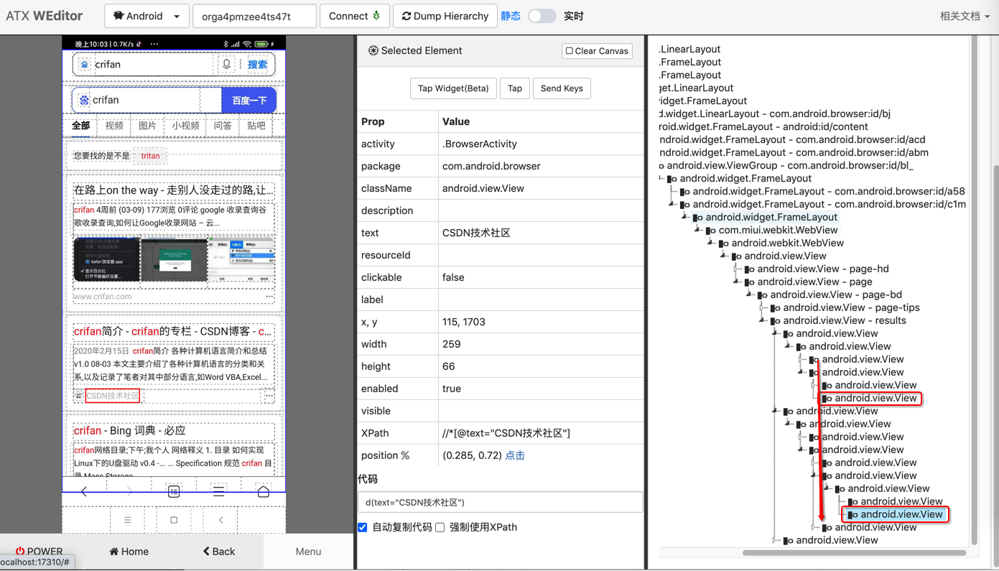
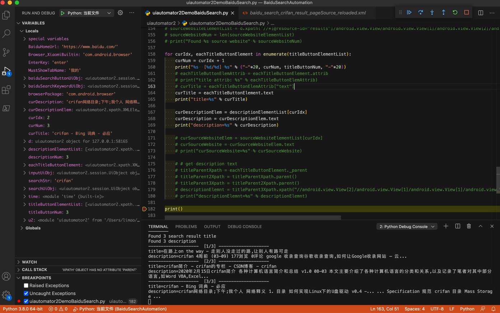

获取元素属性
获取元素属性，一般可以用：
someElement.attrib：返回一个dictsomeElement.text：获取元素文本值
举例：获取百度搜索结果页面的元素列表中的元素属性
对于（调试）页面：

用代码：
# Xpath chain search can find elements
titleButtonElementList = d.xpath("//*[@resource-id='results']//android.widget.Button[@clickable='true']").all()
titleButtonNum = len(titleButtonElementList)
print("Found %s search result title" % titleButtonNum)
# descriptionElementList = d.xpath("//*[@resource-id='results']/android.view.View[1]/android.view.View[1]/android.view.View[2]/android.view.View[1]/android.view.View[1]/android.view.View[1]/android.view.View[1]/android.view.View[1]").all()
descriptionElementList = d.xpath("//*[@resource-id='results']/android.view.View/android.view.View[1]/android.view.View[2]/android.view.View[1]/android.view.View[1]/android.view.View[1]/android.view.View[1]/android.view.View[1]").all()
descriptionNum = len(descriptionElementList)
print("Found %s description" % descriptionNum)
# # sourceWebsiteElementList = d.xpath('//*[@resource-id="results"]/android.view.View/android.view.View[1]/android.view.View[2]/android.view.View[1]').all()
# sourceWebsiteElementList = d.xpath('//*[@resource-id="results"]/android.view.View/android.view.View[1]/android.view.View[2]/android.view.View[2]').all()
# sourceWebsiteNum = len(sourceWebsiteElementList)
# print("Found %s source website" % sourceWebsiteNum)
for curIdx, eachTitleButtonElement in enumerate(titleButtonElementList):
curNum = curIdx + 1
print("%s [%d/%d] %s" % ("-"*20, curNum, titleButtonNum, "-"*20))
# eachTitleButtonElemAttrib = eachTitleButtonElement.attrib
# print("title attrib: %s" % eachTitleButtonElemAttrib)
# curTitle = eachTitleButtonElemAttrib["text"]
curTitle = eachTitleButtonElement.text
print("title=%s" % curTitle)
curDescriptionElem = descriptionElementList[curIdx]
curDescription = curDescriptionElem.text
print("description=%s" % curDescription)
# curSourceWebsiteElem = sourceWebsiteElementList[curIdx]
# curSourceWebsite = curSourceWebsiteElem.text
# print("curSourceWebsite=%s" % curSourceWebsite)
可以搜索到title外，还能输出描述
输出结果：
Found 3 search result title
Found 3 description
-------------------- [1/3] --------------------
title=在路上on the way - 走别人没走过的路,让别人有路可走
description=crifan 4周前 (03-09) 177浏览 0评论 google 收录查询谷歌收录查询,如何让Google收录网站 – 云...
-------------------- [2/3] --------------------
title=crifan简介 - crifan的专栏 - CSDN博客 - crifan
description=2020年2月15日crifan简介 各种计算机语言简介和总结 v1.0 08-03 本文主要介绍了各种计算机语言的分类和关系,以及记录了笔者对其中部分语言,如Word VBA,Excel...
-------------------- [3/3] --------------------
title=crifan - Bing 词典 - 必应
description=crifan网络目录;下午;我个人 网络释义 1. 目录 如何实现Linux下的U盘驱动 v0.4 -... ... Specification 规范 crifan 目录 Mass Storage ...
效果：

说明：
由于来源网站source website的值，不规则，不好定位，放弃获取。
此处是即使获取到，也是只有2个（页面是就显示了2个）
且还都是空（没有获取到真正要的值）。此处暂时不深究了。有机会再深究。